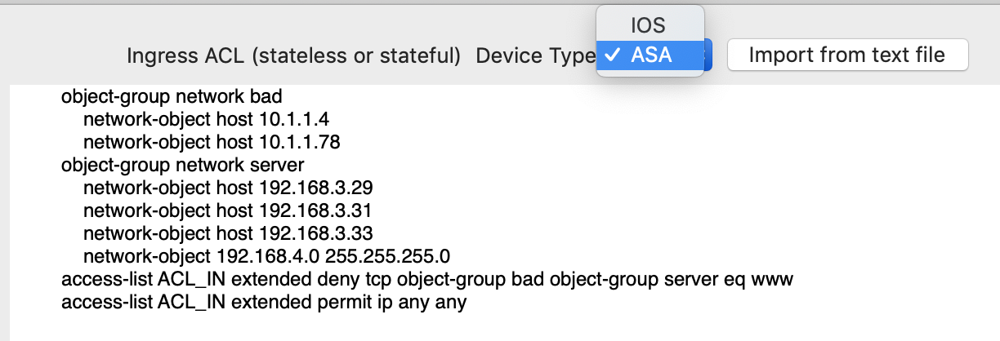
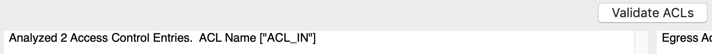
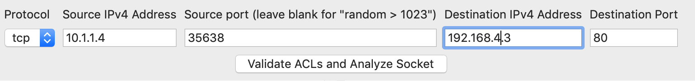
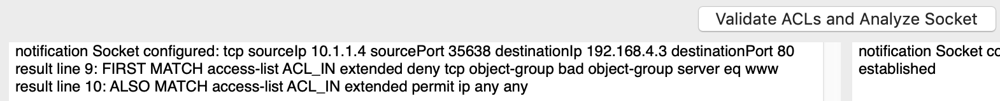

Object Groups and ASA ACLs
Object Groups and ASA ACLs
Network Mom ACL Analyzer supports calculations with network object-groups for ASA. Service object groups are not supported on the ASA. Include the object-group configuration above your ACL to allow the analyzer to include that in its calculations.

Click “Validate ACLs” and review the output for errors and warnings.

Enter your socket information and click “Validate ACLs and Analyze Socket”


Because ASAs are stateful firewalls, we do not support analyzing their return traffic in the egress ACL (top right) field. But if you have a stateless IOS ACL controlling egress you can analyze that in the top right field for return traffic while analyzing ingress traffic through a stateful ASA ACL.
©2019 Network Mom LLC https://networkmom.net feedback@networkmom.net